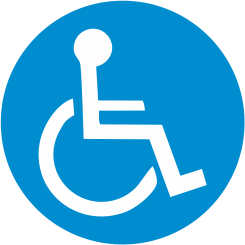

A deficiência motora refere-se a limitações na capacidade de movimentar-se ou controlar os movimentos do corpo, resultantes de condições que afetam o sistema nervoso, músculos ou ossos. Essas limitações podem variar de leves dificuldades a paralisias totais, impactando significativamente a qualidade de vida dos indivíduos afetados. As causas mais comuns de deficiência motora incluem a paralisia cerebral, um distúrbio neurológico que afeta o movimento e a postura, geralmente causado por lesões no cérebro durante o desenvolvimento fetal ou nos primeiros anos de vida. O acidente vascular cerebral (AVC), que resulta na interrupção do fluxo sanguíneo para o cérebro, também pode levar a danos às áreas responsáveis pelo controle motor. Além disso, lesões na medula espinhal podem causar paralisias parciais ou totais, dependendo da localização e gravidade da lesão. Doenças neuromusculares, como a esclerose lateral amiotrófica (ELA) e as distrofias musculares, também afetam a função muscular e o controle motor.
As deficiências motoras podem afetar atividades cotidianas, como locomoção, alimentação, comunicação e higiene pessoal. A gravidade das limitações varia conforme a condição subjacente e a resposta ao tratamento. O tratamento depende da causa específica da deficiência motora e pode incluir fisioterapia, terapia ocupacional, medicamentos e, em alguns casos, cirurgias. A fisioterapia envolve exercícios e técnicas para melhorar a mobilidade e a força muscular, enquanto a terapia ocupacional apoia na adaptação de atividades diárias e uso de dispositivos assistivos. Medicamentos podem ser utilizados para controlar sintomas associados, como espasticidade ou dor, e procedimentos cirúrgicos podem ser necessários para corrigir deformidades ou aliviar pressões. É fundamental promover a inclusão social de pessoas com deficiência motora, garantindo acessibilidade em espaços públicos, transporte e educação. No Brasil, a legislação busca assegurar direitos e igualdade de oportunidades para essas pessoas. De acordo com dados do IBGE, a população com deficiência no Brasil foi estimada em 18,6 milhões de pessoas de 2 anos ou mais, o que corresponde a 8,9% da população dessa faixa etária.